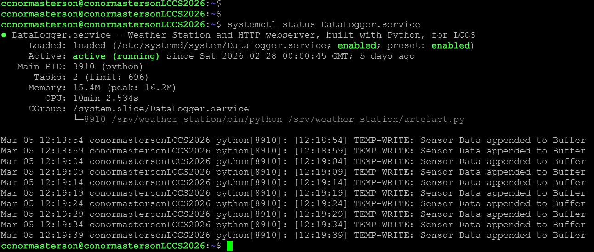
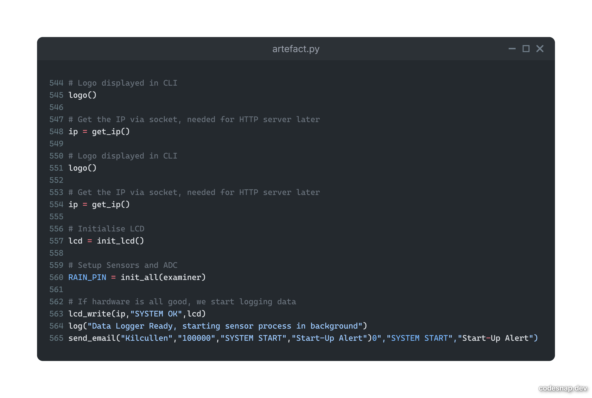
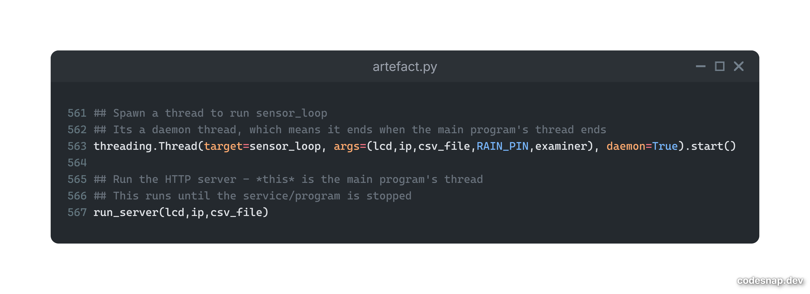
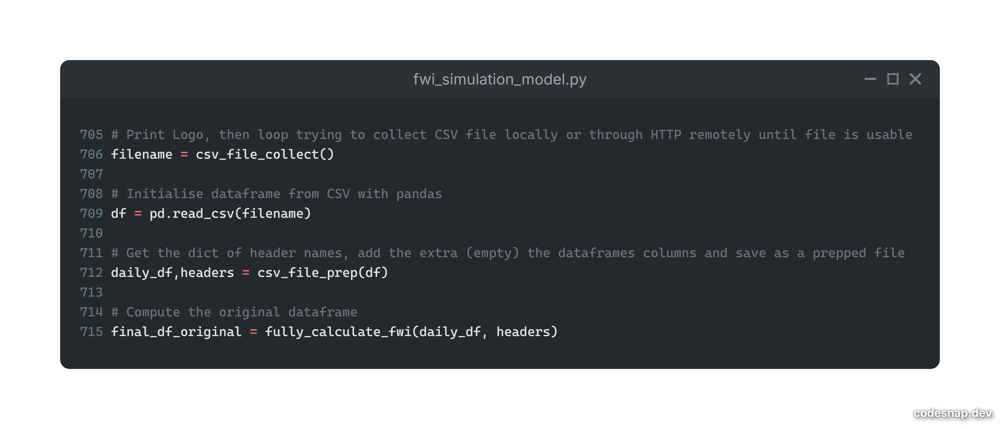
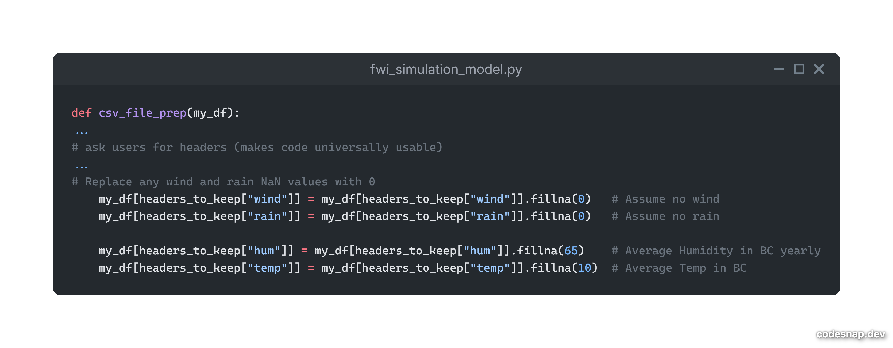
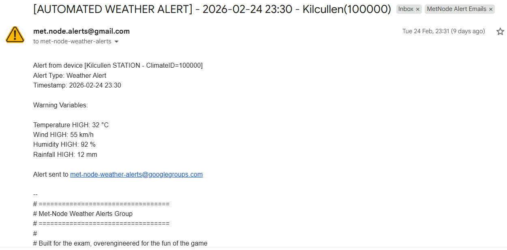
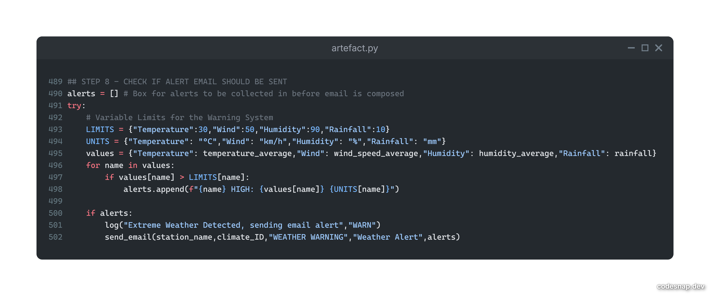
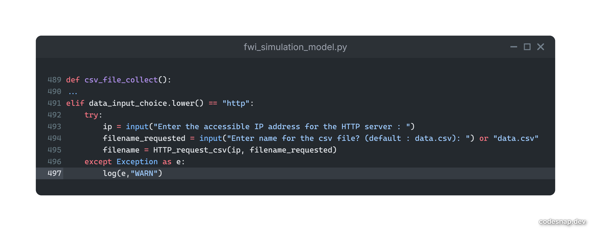
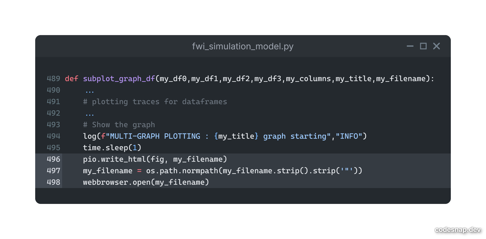

With my design done, I started configuring the Raspberry Pi for the embedded system. I installed Ubuntu 24.04LTS as the OS, set NTP server syncing for correct system clock-time, used when writing times and dates to the CSV, installed pip and installed the modules required for the sensors.

Systemctl service that automatically starts embedded system program
Once the system was configured, I started making the embedded system code. It would initialise the LCD, ADC, test the sensors to verify ADC connection, then run the sensor_loop function. This function initialised time-related variables, such as the write and read intervals, then went into an infinite loop, which read the sensors and added them to the buffer. If the time since last write was greater than the write interval, it would average the variables in the buffer then write to the CSV.

I set up the HTTP server (run_server function) so I could access the files easier. I used threading for run_server and sensor_loop to run simultaneously, as run_server ran on one CPU thread, while sensor_loop ran on another thread.

While developing the first draft of my system, I used 1 minute long write-intervals in order to find errors quicker
Once the embedded system was running, I started coding the simulation model. I wrote the code in individual functions so I could test and debug easier.
I started by collecting a CSV file, then cleaning it into only the rows I needed and creating FWI variable rows filled with NULL. This dataframe was passed into a function that would find the fire season start, return the start date, pass this date and the dataframe into an startup_fwi, which gave the starting row FFMC, DMC and DC values.

After, all the FWI variables for the dataframe were calculated, then graphed by Plotly. Once the original data was displayed, the program then copies the final dataframe for 4 what-if scenarios, changes weather variables in each dataframe, and graphs these 4 dataframes vs DSR in 8 easy to read Plotly subgraphs, just what stakeholders and end-users want to see.
I realised that some sensor values in the csv for the simulation file might have NULL where I needed values (such as temperature), so I wrote extra code to the cleaning function so it would write average values for temperature and humidity, and write 0 for wind and rain if NULL. This fixed the issue immediately.

With the simulation model drafted, I returned to finish the weather station by completing AR3. I wanted to make the weather station adapt and alert users if the weather variables were within a dangerous range, so recreating something I made for a personal project in 2023, I gave my weather station its own email address, made a google group (where end-users and stakeholders could be added) and gave the weather station code to email alerts to that group if any weather variables were in dangerous ranges.

In order to set up email alerts, the system needed an email address, its app password, an smtp server to use (smtp.google.com), and someone to send it to (the google group if sending to many users). It would be bad practice to hardcode these variables, and I would feel like a clueless software development intern tasked with stuff he should frankly not be trusted with doing.

The proper practice for this, from what I know, would be to use a .env file or set these as system environment variables. As I am more familiar with .env files, I chose this approach.
All the variables, such as app password, system email address, recipient email address and smtp server are stored in a .env file, which has permissions set so that nobody can access this file, apart from root or any permitted users. For security reasons, this file has not been included

After completing the system’s code, I set it up in my school to read data until I needed to submit my project. This data is included as 'embedded_system_data.csv'
With the embedded system done, I set off to complete the simulation model.
I included HTTP file collection in the program, which removes the need to collect data then run the program. This makes the program simpler for end-users to run, and quickly provides information to both the end-user and stakeholders.

Afterwards, I started testing with varying datasets. The 1 month dataset ran 100% of the time, the 1 year dataset failed to load sometimes, the 6 year dataset only ran 10%, and the 16 year dataset just didn't load. To guarantee this wouldn't happen for any end-user, I used plotly.io to graph the data as a HTML and save it, then webbrowser (built-in module) opened this HTML file, which fixed the issue
